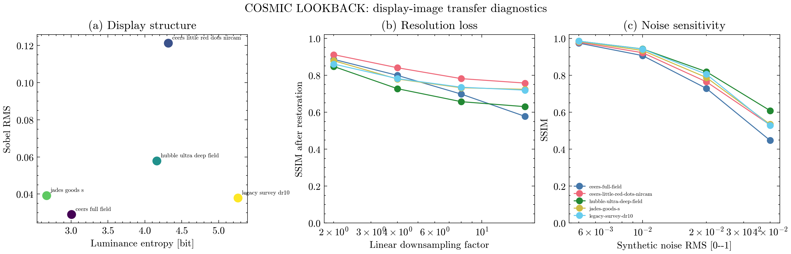

Surveys
SHA-256, LF-normalised text
0b150a0e7630989c5ab36d6f1185af363850e21664ef798b47e83474780f1936Browse 5 versioned evidence files. Table previews simply display stored rows. Consult the project report for the source, processing steps, and inference assumptions.

0b150a0e7630989c5ab36d6f1185af363850e21664ef798b47e83474780f19364d8e084e537267c1ae28f5fe9a6bb830c557bd39b1e8e8a97748b1dfc58ffb0aa7ba366b44b4d32f7489acaf6a30168ee5350421f983fa970da44278a40dca03| file | degradation | level | ssim | gradient_correlation | entropy_retained_fraction |
|---|---|---|---|---|---|
| ceers-full-field.png | resolution | 2.0 | 0.8861368831388242 | 0.8079572576115414 | 1.065621943168813 |
| ceers-full-field.png | resolution | 4.0 | 0.7991917649484104 | 0.470780997992478 | 1.1461716083221953 |
| ceers-full-field.png | resolution | 8.0 | 0.6979340361030291 | 0.20412318721286618 | 1.2882260148182623 |
| ceers-full-field.png | resolution | 16.0 | 0.5773611926694 | 0.0642316246601226 | 1.3958396308933134 |
9440c514f3882ea1ad5139f716099b5347f1dee4901085696c4c3b073cde159d04baaa30ad949ec6dabd9fc8635f09893fae6b0c2355e903253be1417041e740SHA-256 values verify the stored files. They do not independently validate the scientific analysis. Rebuild this page with python scripts/evidence_catalog.py followed by python scripts/render_evidence_page.py.